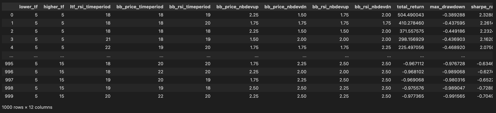
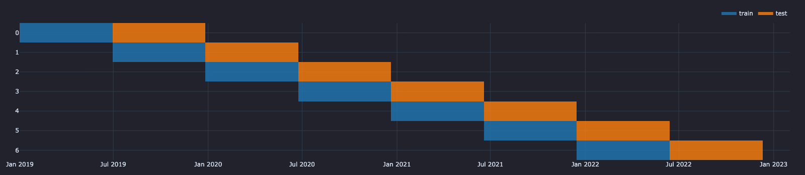
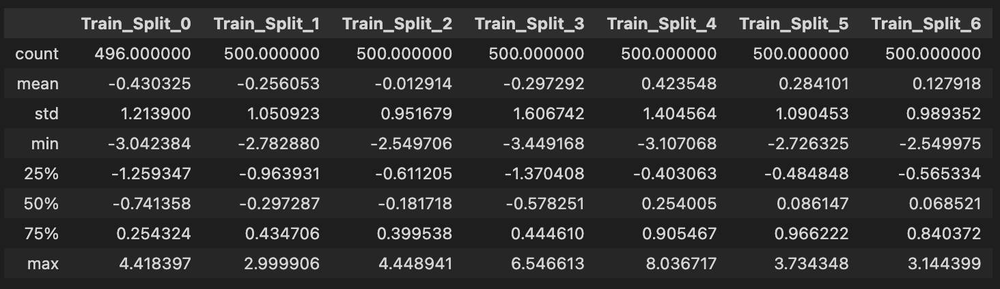
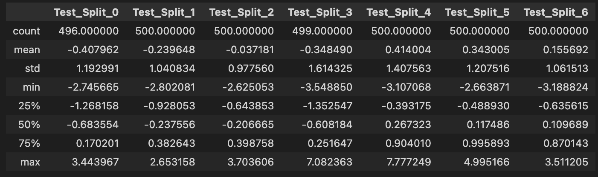

VectorBT Pro - Parameter Optimisation of a Strategy

In this tutorial, we will see how to do Parameter Optimization on the Double Bollinger Band strategy we had seen in our earlier tutorials. The goal of parameter optimization is to find the optimal values for the parameters of an algorithmic trading strategy to maximize a performance metric like total_returns, Sharpe Ratio, Sortino Ratio, Win Rate etc. or also to minimize certain metrics like Total Drawdown. Quintessentially, we will see how to:
- Use the
vbt.Parameterized()decorator to easily convert any strategy function into a parameter optimization simulation. - Use the
vbt.Splitterobject to createtrainandtestsplits for cross validation of the parameter optimization process.
Loading and resampling market data
As always, we begin by loading the market data, in this case BTCUSDT (one minute) data from Binance. We will then resample the M1 data to higher timeframes and store this resampled data in a dictionary for quick in memory access during the parameter optimization process.
import numpy as np
import pandas as pd
import vectorbtpro as vbt
## Acquire BTCUSDT 1m crypto data from Binance
data = vbt.BinanceData.fetch(
["BTCUSDT"],
start="2019-01-01 UTC",
end="2023-02-02 UTC",
timeframe="1m"
)
## Save acquired data locally for persistance
data.to_hdf("/Users/john.doe/vbt_pro_tutorials/data/Binance_BTCUSDT_OHLCV_3Y_m1.h5")
To read hdf files of market data downloaded from Binance, VectorBT Pro has this vbt.BinanceData.from_hdf() method which automatically deals with resampling issues for all the columns.
## Load m1 data - GBPUSD
m1_data = vbt.BinanceData.from_hdf('../data/Binance_BTCUSDT_OHLCV_3Y_m1.h5')
## Resample m1 data to higher timeframes
m5_data = m1_data.resample('5T') # Convert 1 minute to 5 mins
m15_data = m1_data.resample('15T') # Convert 1 minute to 15 mins
m30_data = m1_data.resample('30T') # Convert 1 minute to 30 mins
h1_data = m1_data.resample("1H") # Convert 1 minute to 1 hour
h2_data = m1_data.resample("2H") # Convert 1 minute to 2 hour
h4_data = m1_data.resample('4H') # Convert 1 minute to 4 hour
h12_data = m1_data.resample('12H') # Convert 1 minute to 12 hour
d1_data = m1_data.resample('1D') # Convert 1 minute to Daily data
mtf_data = { "1T" : m1_data, "5T" : m5_data, "15T" : m15_data, "30T" : m30_data,
"1H" : h1_data, "2H" : h2_data, "4H" : h4_data, "12H" : h12_data, "1D" : d1_data }
We will also create helper functions like:
remapped_tf- to retrive mapped key values from thisfreq_dictmapper dictflatten_list- to flatten a 2D list into a 1D listcreate_list_numbers- to generate a range list of numbers
freq_dict = { "1T" : 1, "5T" : 5, "15T" : 15, "30T" : 30,
"1H" : 60, "2H" : 120, "4H" : 240, "8H" : 480,
"12H" : 720, "1D": 1440 }
def remapped_tf(input_value : int) -> str:
"""Map an integer to a string timeframe format"""
tf_freq = {1 : "1T", 5 : "5T", 15 : "15T", 30 : "30T", 60 :"1H",
120 : "2H", 240 : "4H", 720 : "12H", 1440 : "1D"}
new_value = tf_freq.get(input_value)
return new_value
def flatten_list(list_2D : list):
"""Flatten a list of list of strings"""
flat_list = list_2D if len(list_2D) == 0 else [item for sublist in list_2D for item in sublist]
return flat_list
def create_list_numbers(r1, r2, step):
"""Create a list of numbers between two bounds (r1, r2 which can be float or int) and incrementing
each number using the specified `step` value """
if type(r1) == float and type(r2) == float:
return list(np.round(np.arange(r1, r2+step, step), 2))
return list(np.arange(r1, r2+step, step))
You might remember this create_resamplers function from our first tutorial which we used for upsampling.
def create_resamplers(result_dict_keys_list : list, source_indices : list,
source_frequencies :list, target_index : pd.Series, target_freq : str):
"""
Creates a dictionary of vbtpro resampler objects.
Parameters
==========
result_dict_keys_list : list, list of strings, which are keys of the output dictionary
source_indices : list, list of pd.time series objects of the higher timeframes
source_frequencies : list(str), which are short form representation of time series order. Eg:["1D", "4h"]
target_index : pd.Series, target time series for the resampler objects
target_freq : str, target time frequency for the resampler objects
Returns
===========
resamplers_dict : dict, vbt pro resampler objects
"""
resamplers = []
for si, sf in zip(source_indices, source_frequencies):
resamplers.append(vbt.Resampler(source_index = si, target_index = target_index,
source_freq = sf, target_freq = target_freq))
return dict(zip(result_dict_keys_list, resamplers))
@vbt.parameterized decorator
The decorator @vbt.parameterized is engine-agnostic and parameterizes a strategy function and returns a new function with the same signature as the passed one. This decorator enhances our optimal_2BB strategy function (below) to take arguments wrapped with vbt.Param, and build the grid of parameter combinations, run the optimal_2BB function on each parameter combination, and merge the results using concatenation.
The following arguments are used in the @vbt.parameterized() decorator:
random_subset = 1000, randomly selects 1000 combinations out of millions of combinations, like we do inrandom selectionmerge_func = "concat", concats the output of each output row-wise, to the samepd.Series, other values formerg_funcare"column_stack"show_progress = True, shows thetqdmprogress bar of the simulation
@vbt.parameterized(merge_func = "concat", random_subset = 1000, show_progress=True)
def optimal_2BB(lower_tf : int = 1, higher_tf: int = 5,
ltf_rsi_timeperiod : int = 21,
bb_price_timeperiod : int = 14, bb_rsi_timeperiod : int = 14,
bb_price_nbdevup : int = 2, bb_price_nbdevdn: int = 2,
bb_rsi_nbdevup : int = 2, bb_rsi_nbdevdn : int = 2,
output_metric : str | list = "total_return",
index = None
):
lower_tf = remapped_tf(lower_tf)
higher_tf = remapped_tf(higher_tf)
# print("New Lower TF:", lower_tf, "New Higher TF:", higher_tf)
if index is None:
ltf_data = mtf_data[lower_tf]
htf_data = mtf_data[higher_tf]
else:
# print(f"Start Index:{index[0]} || End Index: {index[-1]}")
ltf_data = mtf_data[lower_tf].loc[index[0]:index[-1]]
htf_data = mtf_data[higher_tf].loc[index[0]:index[-1]]
### Get OHLC prices for lower and higher timeframes
ltf_open, ltf_high, ltf_low, ltf_close = ltf_data.get('Open'), ltf_data.get('High'), ltf_data.get('Low'), ltf_data.get('Close')
htf_open, htf_high, htf_low, htf_close = htf_data.get('Open'), htf_data.get('High'), htf_data.get('Low'), htf_data.get('Close')
ltf_rsi = vbt.talib("RSI", timeperiod = ltf_rsi_timeperiod).run(ltf_close, skipna=True).real.ffill()
ltf_bbands_rsi = vbt.talib("BBANDS").run(ltf_rsi, timeperiod = bb_rsi_timeperiod, nbdevup = bb_rsi_nbdevup, nbdevdn = bb_rsi_nbdevdn, skipna=True)
htf_bbands_price = vbt.talib("BBANDS").run(htf_close, timeperiod = bb_price_timeperiod, nbdevup = bb_price_nbdevup, nbdevdn = bb_price_nbdevdn, skipna=True)
## Initialize dictionary
data = {}
col_values = [ ltf_close, ltf_rsi,ltf_bbands_rsi.upperband, ltf_bbands_rsi.middleband, ltf_bbands_rsi.lowerband ]
col_keys = [ "ltf_close", "ltf_rsi", "ltf_bbands_rsi_upper", "ltf_bbands_rsi_middle", "ltf_bbands_rsi_lower" ]
# Assign key, value pairs for method of time series data to store in data dict
for key, time_series in zip(col_keys, col_values):
data[key] = time_series.ffill()
resampler_dict_keys = [higher_tf + "_" + lower_tf]
list_resamplers = create_resamplers(result_dict_keys_list = resampler_dict_keys,
source_indices = [htf_close.index],
source_frequencies = [higher_tf],
target_index = ltf_close.index,
target_freq = lower_tf)
# print(list_resamplers)
## Use along with Manual indicator creation method for MTF
series_to_resample = [
[htf_open, htf_high, htf_low, htf_close,
htf_bbands_price.upperband, htf_bbands_price.middleband, htf_bbands_price.lowerband]
]
resample_data_keys = [
["htf_open", "htf_high", "htf_low", "htf_close",
"htf_bbands_price_upper", "htf_bbands_price_middle", "htf_bbands_price_lower"]
]
df_cols_order = col_keys + flatten_list(resample_data_keys)
## Create resampled time series data aligned to base line frequency (15min)
# print("COLUMNS ORDER:", df_cols_order)
for lst_series, lst_keys, resampler in zip(series_to_resample, resample_data_keys, resampler_dict_keys):
for key, time_series in zip(lst_keys, lst_series):
if key.lower().endswith('open'):
# print(f'Resampling {key} differently using vbt.resample_opening using "{resampler}" resampler')
resampled_time_series = time_series.vbt.resample_opening(list_resamplers[resampler])
else:
resampled_time_series = time_series.vbt.resample_closing(list_resamplers[resampler])
data[key] = resampled_time_series
## construct a multi-timeframe dataframe
mtf_df = pd.DataFrame(data)[df_cols_order]
# print("DataFrame Output:\n", mtf_df.head())
## Long Entry Conditions
c1_long_entry = (mtf_df['htf_low'] <= mtf_df['htf_bbands_price_lower'])
c2_long_entry = (mtf_df['ltf_rsi'] <= mtf_df['ltf_bbands_rsi_lower'] )
## Long Exit Conditions
c1_long_exit = (mtf_df['htf_high'] >= mtf_df['htf_bbands_price_upper'])
c2_long_exit = (mtf_df['ltf_rsi'] >= mtf_df['ltf_bbands_rsi_upper'])
## Create entries and exit columns using the above conditions
mtf_df['entry'] = c1_long_entry & c2_long_entry
mtf_df['exit'] = c1_long_exit & c2_long_exit
mtf_df['signal'] = 0
mtf_df['signal'] = np.where( mtf_df['entry'], 1, 0)
mtf_df['signal'] = np.where( mtf_df['exit'] , -1, mtf_df['signal'])
entries = mtf_df.signal == 1.0
exits = mtf_df.signal == -1.0
pf = vbt.Portfolio.from_signals(
close = ltf_close,
entries = entries,
exits = exits,
direction = "both", ## This setting trades both long and short signals
freq = pd.Timedelta(minutes = freq_dict[lower_tf]),
init_cash = 100000
)
if type(output_metric) == str:
return pf.deep_getattr(output_metric) ## When tuning a single metric
elif type(output_metric) == list:
return pd.Series({k: getattr(pf, k) for k in output_metric}) ## When you want to tune a list of metrics
Double Bollinger Band - Strategy
As a quick recap, the rules of the strategy coded in optimal_2BB are as follows:
-
A long (buy) signal is generated whenever the higher timeframe (Low) price goes below its lower Bollinger band, and the lower timeframe RSI goes below its lower Bollinger band (RSI).
-
A short (sell) signal is generated whenever the higher timeframe (High) price breaks its upper Bollinger band, and the lower timeframe RSI breaks above its upper Bollinger band (RSI).
We can invoke the parameter optimization process by passing the list of parameters we want for each argument wrapped in the vbt.Param class.
The vbt.Param class also accepts conditions, like in our case we don't want the lower_tf to have a value greater than the higher_tf so we specify that using the condition argument inside the vbt.Param class. In this particular case we are just specifying one metric (total_return) to tune our parameter optimization.
pf_results = optimal_2BB(
lower_tf = vbt.Param([1, 5, 15, 30, 60, 120, 240, 720], condition = "x <= higher_tf"),
higher_tf = vbt.Param([1, 5, 15, 30, 60, 120, 240, 720, 1440]),
ltf_rsi_timeperiod = vbt.Param(create_list_numbers(18, 22, 1)),
bb_price_timeperiod = vbt.Param(create_list_numbers(18, 22, 1)),
bb_rsi_timeperiod = vbt.Param(create_list_numbers(18, 22, 1)),
bb_price_nbdevup = vbt.Param(create_list_numbers(1.5, 2.5, step = 0.25)),
bb_price_nbdevdn = vbt.Param(create_list_numbers(1.5, 2.5, step = 0.25)),
bb_rsi_nbdevup = vbt.Param(create_list_numbers(1.5, 2.5, step = 0.25)),
bb_rsi_nbdevdn = vbt.Param(create_list_numbers(1.5, 2.5, step = 0.25)),
output_metric = "total_return"
)
print(f"Best Total Returns: {round(pf_results.max(), 2)} %")
print(f"Parameter Combinations with Best Total Returns:{pf_results.idxmax()}")
print(f"Worst Total Returns: {round(pf_results.min(), 2)} %")
print(f"Parameter Combinations with Worst Total Returns:{pf_results.idxmin()}")
Output
Best Total Returns: 8917.26 %
Parameter Combinations with Best Total Returns:(1, 1, 19, 20, 22, 1.75, 2.25, 1.5, 2.0)
Worst Total Returns: -4.41 %
Parameter Combinations with Worst Total Returns:(120, 1440, 18, 19, 22, 2.5, 2.0, 2.25, 2.5)
Since for this simulation, we selected only a single output metric ( total_returns ), we get a multi-index pandas series which we can sort to quickly see the most promising results
pf_results.sort_values(ascending=False)

We can also pass multiple metrics as a list to the output_metric argument, and the output the entire portfolio simulation a multi-index pandas series. Of course, in this case, it is not like we are tuning multiple knobs and dials to get an optimal value for all the metrics passed, but we are just returning multiple metrics as part of the output of each simulation.
pf_results = optimal_2BB(
lower_tf = vbt.Param([5, 30], condition = "x <= higher_tf"),
higher_tf = vbt.Param([1, 5, 15]),
ltf_rsi_timeperiod = vbt.Param(create_list_numbers(18, 22, 1)),
bb_price_timeperiod = vbt.Param(create_list_numbers(18, 22, 1)),
bb_rsi_timeperiod = vbt.Param(create_list_numbers(18, 22, 1)),
bb_price_nbdevup = vbt.Param(create_list_numbers(1.5, 2.5, step = 0.25)),
bb_price_nbdevdn = vbt.Param(create_list_numbers(1.5, 2.5, step = 0.25)),
bb_rsi_nbdevup = vbt.Param(create_list_numbers(1.5, 2.5, step = 0.25)),
bb_rsi_nbdevdn = vbt.Param(create_list_numbers(1.5, 2.5, step = 0.25)),
output_metric = ["total_profit", "total_return", "max_drawdown", "sharpe_ratio"]
)To flatten the multi-index series and convert it into a pandas DataFrame, we can use this following code:
pf_results_df = pf_results.unstack(level = -1)
pf_results_df = pf_results_df[['total_return','max_drawdown','sharpe_ratio']].sort_values(
by=['total_return', 'max_drawdown'],
ascending=False)
pf_results_df.reset_index(inplace=True)
pf_results_df

## To check if our condition for `lower_tf` works
print("Length of DF:",len(pf_results_df[pf_results_df['lower_tf'] > pf_results_df['higher_tf']]))
Output
Length of DF: 0
print(f"Best Total Returns: {round(pf_results_df['total_return'].max(), 2)} %")
print(f"Parameter Combinations with Best Total Returns:")
pd.DataFrame(pf_results_df.iloc[pf_results_df['total_return'].idxmax()]).T
Output:
Best Total Returns: 504.49 %
Parameter Combinations with Best Total Returns:
| lower_tf | higher_tf | ltf_rsi_timeperiod | bb_price_timeperiod | bb_rsi_timeperiod | bb_price_nbdevup | bb_price_nbdevdn | bb_rsi_nbdevup | bb_rsi_nbdevdn | total_return | max_drawdown | sharpe_ratio | |
|---|---|---|---|---|---|---|---|---|---|---|---|---|
| 0 | 5 | 5 | 18.0 | 18.0 | 19.0 | 2.25 | 1.5 | 1.75 | 2.0 | 504.490043 | -0.389288 | 2.328832 |
print(f"Worst Total Returns: {round(pf_results_df['total_return'].min(), 2)} %")
print(f"Parameter Combinations with Worst Total Returns:")
pd.DataFrame(pf_results_df.iloc[pf_results_df['total_return'].idxmin()]).T
Output:
Worst Total Returns: -0.98 %
Parameter Combinations with Worst Total Returns:
| lower_tf | higher_tf | ltf_rsi_timeperiod | bb_price_timeperiod | bb_rsi_timeperiod | bb_price_nbdevup | bb_price_nbdevdn | bb_rsi_nbdevup | bb_rsi_nbdevdn | total_return | max_drawdown | sharpe_ratio | |
|---|---|---|---|---|---|---|---|---|---|---|---|---|
| 999 | 5 | 15 | 20.0 | 22.0 | 20.0 | 2.25 | 2.5 | 2.25 | 2.5 | -0.977365 | -0.991565 | -0.704983 |
Cross Validation
Cross-Validation (CV) is a technique used to curb overfitting, which involves partitioning a sample of data into complementary subsets, performing the analysis on one subset of data called the training or in-sample (IS) set, and validating the analysis on the other subset of data called the testing, validation or out-of-sample (OOS) set. This procedure is repeated until we have multiple OOS periods and can draw statistics from these results combined. CV is mainly done for the following reasons:
- Improve robustness testing of the strategy
- Mitigate the risk of running wrong predictions.
- This is because, the input data, usually retrieved from a limited time frame slice of history, is highly biased and can not produce reliable forecasts. One way to mitigate the risk of running wrong predictions is to do CV, where we re-run backtests many times but each with slightly different data input
Splitter Class
At the heart of implementing CV functionality in vectorBT Pro is the class Splitter, whose main responsibility is to produce arbitrary splits and perform operations on those splits. The workings of this class are quite simple- the user calls one of the class methods with the prefix from_to generate splits; in return, a splitter instance is returned with splits and their labels being saved in a memory-efficient array format. This instance can be used to analyze the split distribution, to chunk array-like objects, and to run User Defined Functions (UDFs).
The splitter class has many methods like:
from_rollingandfrom_n_rollingfrom_expandingandfrom_n_expandingfrom_splitsfrom_rangesfrom_grouperfrom_randomfrom_sklearnfrom_split_func
In this tutorial we will just go over the from_rolling splitter method as it is the typical requirement of creating data splits. It is beyond the scope of this tutorial, to go over all the splitter methods above, so it is recommended to read the vectorbtpro documentation to decide which method would best fit your use case.
Let's create a splitter schema using splitter.from_rolling() method for cross-validation of our optimal_2BB strategy.
## Global Plot Settings
vbt.settings.set_theme("dark")
vbt.settings['plotting']['layout']['width'] = 1600
splitter = vbt.Splitter.from_rolling(
index = d1_data.index,
length = 360,
split = 0.5,
set_labels = ["train", "test"]
)
The arguments we have used in the from_rolling method for the above schema are as follows:
index- datatime index series required to create the splits from. In this case, we used the the index series from the daily (d1_data) data.length- can beint,float, ortimedelta_like. Floating values between 0 and 1 are considered relative. Length can also be negative. We have used 360 days as the length of a single split.split- Ranges to split the range into. If None, will produce the entire range as a single range. Heresplit = 0.5means, we will be splitting the length of 360 days into equal splits fortrainandtestsets.set_labels- Labels corresponding to the selected row/column groups. In our case we are creating two sets calledtrainandtest
splitter.plot().show()
Output:

The smallest unit of a splitter is a range, which is a period of time that can be mapped onto data. On the plot above, we can count a total of 14 ranges - 7 blue ones for train sets and 7 orange ones for test sets. Multiple ranges next to each other and representing a single test are called a split; there are 6 splits present in the chart, such that we expect one pipeline to be tested on 6 different data ranges. Different range types within each split are called sets. We have used the two sets - "training" and "test" (commonly used in backtesting). The number of sets is fixed throughout all splits.
splitter.splits
Output:
| set | train | test |
|---|---|---|
| split | ||
| 0 | slice(0,180,None) | slice(180,360,None) |
| 1 | slice(180,360,None) | slice(360,540,None) |
| 2 | slice(360,540,None) | slice(540,720,None) |
| 3 | slice(540,720,None) | slice(720,900,None) |
| 4 | slice(720,900,None) | slice(900,1080,None) |
| 5 | slice(900,1080,None) | slice(1080,1260,None) |
| 6 | slice(1080,1260,None) | slice(1260,1440,None) |
Time is being tracked separately in Splitter.index while assets aren't being tracked at all since they have no implications on splitting.
splitter.index
Output:
DatetimeIndex(['2019-01-01 00:00:00+00:00', '2019-01-02 00:00:00+00:00',
'2019-01-03 00:00:00+00:00', '2019-01-04 00:00:00+00:00',
'2019-01-05 00:00:00+00:00', '2019-01-06 00:00:00+00:00',
'2019-01-07 00:00:00+00:00', '2019-01-08 00:00:00+00:00',
'2019-01-09 00:00:00+00:00', '2019-01-10 00:00:00+00:00',
...
'2023-01-23 00:00:00+00:00', '2023-01-24 00:00:00+00:00',
'2023-01-25 00:00:00+00:00', '2023-01-26 00:00:00+00:00',
'2023-01-27 00:00:00+00:00', '2023-01-28 00:00:00+00:00',
'2023-01-29 00:00:00+00:00', '2023-01-30 00:00:00+00:00',
'2023-01-31 00:00:00+00:00', '2023-02-01 00:00:00+00:00'],
dtype='datetime64[ns, UTC]', name='Open time', length=1493, freq='D')
print("Total Nr. of Splits:",len(close_slices.index))
df_splits = pd.DataFrame(close_slices.index.tolist(), columns=["split", "period"])
unique_splits = df_splits["split"].unique().tolist()
print("Unique Splits:", unique_splits)
df_splits
Output:
Total Nr. of Splits: 14
Unique Splits: [0, 1, 2, 3, 4, 5, 6]
| split | period | |
|---|---|---|
| 0 | 0 | train |
| 1 | 0 | test |
| 2 | 1 | train |
| 3 | 1 | test |
| 4 | 2 | train |
| 5 | 2 | test |
| 6 | 3 | train |
| 7 | 3 | test |
| 8 | 4 | train |
| 9 | 4 | test |
| 10 | 5 | train |
| 11 | 5 | test |
| 12 | 6 | train |
| 13 | 6 | test |
Compute Baseline Returns across splits
The baseline returns is just the buy and hold returns for buying and holding the asset for the period of the split.
def get_total_return(close_prices):
return close_prices.vbt.to_returns().vbt.returns.total()
base_line_returns = close_slices.apply(get_total_return)
base_line_returns
Output:
split set
0 train 2.134762
test -0.336472
1 train -0.336472
test 0.326704
2 train 0.326704
test 1.523051
3 train 1.523051
test 0.576598
4 train 0.576598
test 0.377110
5 train 0.377110
test -0.527897
6 train -0.527897
test -0.226275
dtype: float64
Print upper and lower bound in each split
train_slices = [slice(close_slices[i, "train"].index[0], close_slices[i, "train"].index[-1]) for i in unique_splits]
train_slices
Output:
[slice(Timestamp('2019-01-01 00:00:00+0000', tz='UTC', freq='D'), Timestamp('2019-06-29 00:00:00+0000', tz='UTC', freq='D'), None),
slice(Timestamp('2019-06-30 00:00:00+0000', tz='UTC', freq='D'), Timestamp('2019-12-26 00:00:00+0000', tz='UTC', freq='D'), None),
slice(Timestamp('2019-12-27 00:00:00+0000', tz='UTC', freq='D'), Timestamp('2020-06-23 00:00:00+0000', tz='UTC', freq='D'), None),
slice(Timestamp('2020-06-24 00:00:00+0000', tz='UTC', freq='D'), Timestamp('2020-12-20 00:00:00+0000', tz='UTC', freq='D'), None),
slice(Timestamp('2020-12-21 00:00:00+0000', tz='UTC', freq='D'), Timestamp('2021-06-18 00:00:00+0000', tz='UTC', freq='D'), None),
slice(Timestamp('2021-06-19 00:00:00+0000', tz='UTC', freq='D'), Timestamp('2021-12-15 00:00:00+0000', tz='UTC', freq='D'), None),
slice(Timestamp('2021-12-16 00:00:00+0000', tz='UTC', freq='D'), Timestamp('2022-06-13 00:00:00+0000', tz='UTC', freq='D'), None)]
test_slices = [slice(close_slices[i, "test"].index[0], close_slices[i, "test"].index[-1]) for i in unique_splits]
test_slices
Output:
[slice(Timestamp('2019-06-30 00:00:00+0000', tz='UTC', freq='D'), Timestamp('2019-12-26 00:00:00+0000', tz='UTC', freq='D'), None),
slice(Timestamp('2019-12-27 00:00:00+0000', tz='UTC', freq='D'), Timestamp('2020-06-23 00:00:00+0000', tz='UTC', freq='D'), None),
slice(Timestamp('2020-06-24 00:00:00+0000', tz='UTC', freq='D'), Timestamp('2020-12-20 00:00:00+0000', tz='UTC', freq='D'), None),
slice(Timestamp('2020-12-21 00:00:00+0000', tz='UTC', freq='D'), Timestamp('2021-06-18 00:00:00+0000', tz='UTC', freq='D'), None),
slice(Timestamp('2021-06-19 00:00:00+0000', tz='UTC', freq='D'), Timestamp('2021-12-15 00:00:00+0000', tz='UTC', freq='D'), None),
slice(Timestamp('2021-12-16 00:00:00+0000', tz='UTC', freq='D'), Timestamp('2022-06-13 00:00:00+0000', tz='UTC', freq='D'), None),
slice(Timestamp('2022-06-14 00:00:00+0000', tz='UTC', freq='D'), Timestamp('2022-12-10 00:00:00+0000', tz='UTC', freq='D'), None)]
Splitter.apply - Applying our optimal_2BB function to the splitter sets
We can use the splitter.apply() to apply the different splits on our strategy optimal_2BB function, by selecting the splits by their set label (eg: train or test). We would pass our strategy function (optimal_2BB) to the apply_func argument of the splitter_apply method and the arguments of the optimal_2BB function typically follow after the apply_func argument.
The splitter.apply() method also has lots of arguments on its own and below we will see the significant ones used here:
indexargument allows us to pass thesplitter.indexvariable containing our timeseries index, wrapped with the classvbt.Takeablewhich represents an object from which a range can be taken. Thevbt.Takeablemethod will select a slice from it and substitute the instruction with that slice.set_argument allows us to select theset_labelfrom the splitter object, in our case eithertrainortest_random_subsetargument over-rides the argumentrandom_subsetinvbt.parameterizedand determines the nr. of simulations to run per splitmerge_funcargument with the valueconcatallows to append the result of each simulation in the train set row-wise (axis = 0)execute_kwargscontrol the execution of each split/set/range_execute_kwargscontrol the execution of your parameter combinations
When we use this optimal_2BB function during cross-validation by calling splitter.apply() method, we have to pass an index argument to our optimal_2BB function. We slice the dataframe using this index argument (eg: mtf_data[lower_tf]loc[index[0]:index[-1]]) inside the optimal_2BB function since we are doing vbt.Splitter.from_rolling()in this tutorial.
Generally, if the splitter produces date ranges that contain no gaps, such as in from_rolling method and most other cross-validation schemes for time-series data, we can use the first and the last date (also called "bounds") of each produced date range to select the subset of data.
For splitter versions that produce gaps, such as for k-fold cross-validation schemes (which are rarely used anyway), we must use the entire index to select the subset of data.
Performance on train splits
Below we will see the splitter.apply used on our train splits
train_perf = splitter.apply(
apply_func = optimal_2BB, ## apply your strategy function to the splitter object, followed by its arguments
lower_tf = vbt.Param([1, 5, 15, 30, 60, 120, 240, 720], condition = "x <= higher_tf"),
higher_tf = vbt.Param([1, 5, 15, 30, 60, 120, 240, 720, 1440]),
ltf_rsi_timeperiod = vbt.Param(create_list_numbers(18, 22, 1)),
bb_price_timeperiod = vbt.Param(create_list_numbers(18, 22, 1)),
bb_rsi_timeperiod = vbt.Param(create_list_numbers(18, 22, 1)),
bb_price_nbdevup = vbt.Param(create_list_numbers(1.5, 2.5, step = 0.25)),
bb_price_nbdevdn = vbt.Param(create_list_numbers(1.5, 2.5, step = 0.25)),
bb_rsi_nbdevup = vbt.Param(create_list_numbers(1.5, 2.5, step = 0.25)),
bb_rsi_nbdevdn = vbt.Param(create_list_numbers(1.5, 2.5, step = 0.25)),
output_metric = "sharpe_ratio",
#### Arguments of splitter.apply() not related to strategy
index = vbt.Takeable(splitter.index), ## DataTime index from the splitter object
set_ = "train", ## Specify the set to be used for this CV simulation - train or test
_random_subset = 500, ## Specify the nr. of simulations to run per train split
merge_func = "concat", ## concat the results
execute_kwargs=dict(show_progress=True), ## execute_kwargs control the execution of each split/set/range - Show Progress bar of the simulation
_execute_kwargs=dict(show_progress=False, clear_cache=50, collect_garbage=50) ## _execute_kwargs control the execution of your parameter combinations
)
train_perf.sort_values(ascending=False)
An argument having underscore _ as the prefix (eg: _random_subset) here means that the argument overrides the default argument value passed to the vbt.parameterized() decorator. In this case, _random_subset = 500 means we will be doing only 500 simulations for each train split (7 train splits in total), as opposed to the default value of random_subset = 1000 set in the vbt.parameterized() decorator above the optimal_2BB function definition.

train splitsStatistics on train split
train_split_describe = pd.concat([train_perf[train_perf.index.get_level_values('split') == i].describe()\
for i in unique_splits], axis = 1,
keys = [f"Train_Split_{i}" for i in unique_splits])
train_split_describe
Output:

## Compute baseline, best and worst returns for the overlaid line plots
train_split_best_returns = train_split_describe.loc['max'].reset_index(drop=True)
train_split_worst_returns = train_split_describe.loc['min'].reset_index(drop=True)
train_splits_baseline_returns = pd.Series([base_line_returns[i, "train"] for i in unique_splits])
## Create Box Plot for train_performance
train_split_fig = train_perf.vbt.boxplot(
by_level="split",
trace_kwargs=dict(
line=dict(color="lightskyblue"),
opacity=0.4,
showlegend=False
),
xaxis_title="Train Splits",
yaxis_title="Sharpe Ratio"
)
train_split_best_returns.vbt.plot(trace_kwargs=dict(name="Best Returns", line=dict(color="limegreen", dash="dash")), fig=train_split_fig)
train_split_worst_returns.vbt.plot(trace_kwargs=dict(name="Worst Returns", line=dict(color="tomato", dash="dash")), fig=train_split_fig)
train_splits_baseline_returns.vbt.plot(trace_kwargs=dict(name="Baseline", line=dict(color="yellow", dash="dash")), fig=train_split_fig)
train_split_fig.show()
train splitsPerformance Statistics on test splits
test_perf = splitter.apply(
apply_func = optimal_2BB, ## apply your strategy function to the splitter object, followed by its arguments
lower_tf = vbt.Param([1, 5, 15, 30, 60, 120, 240, 720], condition = "x <= higher_tf"),
higher_tf = vbt.Param([1, 5, 15, 30, 60, 120, 240, 720, 1440]),
ltf_rsi_timeperiod = vbt.Param(create_list_numbers(18, 22, 1)),
bb_price_timeperiod = vbt.Param(create_list_numbers(18, 22, 1)),
bb_rsi_timeperiod = vbt.Param(create_list_numbers(18, 22, 1)),
bb_price_nbdevup = vbt.Param(create_list_numbers(1.5, 2.5, step = 0.25)),
bb_price_nbdevdn = vbt.Param(create_list_numbers(1.5, 2.5, step = 0.25)),
bb_rsi_nbdevup = vbt.Param(create_list_numbers(1.5, 2.5, step = 0.25)),
bb_rsi_nbdevdn = vbt.Param(create_list_numbers(1.5, 2.5, step = 0.25)),
output_metric = "sharpe_ratio",
#### Arguments of splitter.apply() not related to strategy
index = vbt.Takeable(splitter.index), ## DataTime index from the splitter object
_random_subset = 500, ## Specify the nr. of simulations to run per test split
set_ = "test", ## Specify the set to be used for this CV simulation - train or test
merge_func ="concat", ## concat the results
execute_kwargs=dict(show_progress=True), ## execute_kwargs control the execution of each split/set/range - Show Progress bar of the simulation
_execute_kwargs=dict(show_progress=False, clear_cache=50, collect_garbage=50) ## _execute_kwargs control the execution of your parameter combinations
)
test_perf.sort_values(ascending=False)

test splitsStatistics on test split
test_split_describe = pd.concat([test_perf[test_perf.index.get_level_values('split') == i].describe()\
for i in unique_splits], axis = 1,
keys = [f"Test_Split_{i}" for i in unique_splits])
test_split_describe

## Compute baseline, best and worst returns for the overlaid line plots
test_split_best_returns = test_split_describe.loc['max'].reset_index(drop=True)
test_split_worst_returns = test_split_describe.loc['min'].reset_index(drop=True)
test_splits_baseline_returns = pd.Series([base_line_returns[i, "test"] for i in unique_splits])
## Create Box Plot for test_performance statistics
test_split_fig = test_perf.vbt.boxplot(
by_level="split",
trace_kwargs=dict(
line=dict(color="lightskyblue"),
opacity=0.4,
showlegend=False
),
xaxis_title="Test Splits",
yaxis_title="Sharpe Ratio"
)
test_split_best_returns.vbt.plot(trace_kwargs=dict(name="Best Returns", line=dict(color="limegreen", dash="dash")), fig=test_split_fig)
test_split_worst_returns.vbt.plot(trace_kwargs=dict(name="Worst Returns", line=dict(color="tomato", dash="dash")), fig=test_split_fig)
test_splits_baseline_returns.vbt.plot(trace_kwargs=dict(name="Baseline", line=dict(color="yellow", dash="dash")), fig=test_split_fig)
test_split_fig.show()
test splitsBONUS - Line-by-Line Profiling of a python function
It is sometimes important to optimize your strategy function to reduce the time taken for each simulation. We can do, line by line profiling of optimal_2BB function using this %load_ext line_profiler.
When applying the line_profiler you have to remove the vbt.parameterized() decorator, and apply the line_profiler on the unwrapped raw optimal_2BB strategy function. Below is a snapshot of the results you will get from the line_profiler which you can use to optimize aspects of your strategy function which have very higher Time per hit cost.
optimal_2BB function